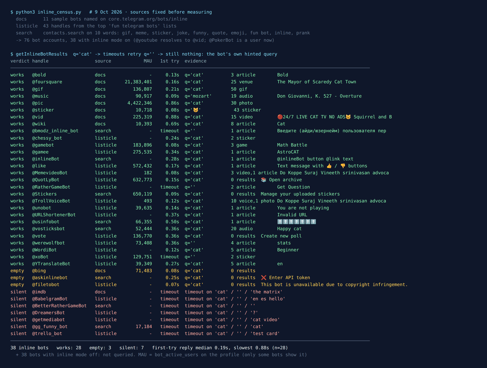

Telegram Inline Bots List: 38 Tested, 28 Still Work
Inline bots are the fun bots most people use without knowing the name for them. You type @gif cat in any chat, a row of GIFs pops up above the keyboard, you tap one, and it goes into the conversation. The bot never joins the chat. Telegram’s own manual puts it plainly: “users can call your bot by typing its username and a query in the text input field in any chat”, and people can get content from it “without sending any messages at all”.
That makes them the easiest way to make a group chat more fun. Nobody has to add anything, and no admin has to approve a bot that reads every message. But most lists of “fun Telegram bots” were written years ago, and a bot that stops running doesn’t disappear from the list. So on the night of 9 October 2026 I sent the same inline query to every inline bot I could find in three places: Telegram’s own documentation, the top web lists of fun Telegram bots, and Telegram’s search box. 76 bot accounts came back. 38 have inline mode switched on. 28 of those still do their job, 3 answer but give you nothing useful, and 7 didn’t answer at all, not even on a second and third try.
Even Telegram’s own sample bots aren’t all there. Of the eleven names in its manual, one now points to a different bot, one returns no results for anything, and one never answered.

How I tested them
An inline query is a real request. When you type @gif cat, Telegram forwards “cat” to the bot’s server and waits for a list of results. A bot whose server is off can’t answer, so Telegram eventually gives up with a timeout error. That makes an inline query a clean liveness test: no messages sent, nothing for the bot’s owner to read except the query itself.
I fixed the sources before measuring anything:
- Telegram’s documentation. The inline bots page lists eleven sample bots:
@gif,@vid,@pic,@bing,@wiki,@imdb,@bold,@youtube,@music,@foursquareand@sticker. - The web lists. Every bot handle printed in the top results for “fun telegram bots” and “funny telegram bots for groups” that I could fetch: lists from MakeUseOf, Shopee, FileWhopper, GoInsight, Cashify, Botostore and Telegramic. That gave 43 handles. 41 of them are still bots.
@PokerBotis now an ordinary user account, and one list’s “meme bot” is a channel. - Telegram’s search box, the
contacts.searchmethod, on ten fun words: gif, meme, sticker, joke, funny, quote, emoji, “fun bot”, inline and prank. It mostly returns channels and groups for words like these, so it added only 25 new bots.
Whether a bot has inline mode on is a flag on its account. 38 bots don’t have it, and I didn’t message those, because this test is about inline only. (Some of them are group game bots. I messaged the game bots from these lists in an earlier test.)
Each of the 38 inline bots got the query “cat”. Anything that timed out got an empty query, because some bots only answer that. Anything still silent, or returning nothing without saying why, got a third try with the exact query its own hint asks for: an emoji for @sticker, “Mozart” for @music, a film title for @imdb. I ran the whole first pass twice, a few minutes apart, and every verdict came out the same both times.
Telegram’s own inline bots in 2026
These are the ones built in. You don’t need to find them, and most people meet them by accident.
@gif— works. “cat” returned 50 GIFs in 0.21 seconds. Fifty is the most a bot is allowed to return for one query (the Bot API says “No more than 50 results per query are allowed”), so@giffilled the whole page.@vid— works, 15 YouTube videos. The odd one:@youtubenow opens the same account as@vid. Telegram’s manual still describes@youtubeas a bot that “Shows a ‘Sign in to YouTube’ button, then suggests personalized results”. There’s no sign-in any more, so the eleven names are ten bots.@pic— works, 30 images, and 4,422,346 monthly users by the number Telegram shows on its profile. It now also shows a “Create image with Alice AI” button above the results. Alice is Yandex’s assistant.@sticker— works, but only with an emoji. Type a word and you get “Enter one or more emoji”. 😺 returned 43 stickers.@wiki— works, 8 Wikipedia articles, “Cat” first.@bold— works. It offers three formatting options for your text, Bold first. Not fun exactly, but still there.@music— works, but it’s classical music only. “cat” found nothing and the bot itself suggested Mozart. Mozart returned 19 tracks, the overture to Don Giovanni first.@foursquare— works, 25 places, and asks for your location (more on that below). Its profile shows 21,383,401 monthly users, the biggest number in this test.@bing— answers instantly with nothing. Zero results for “cat”, zero for “kitten”. Its profile still shows 71,483 monthly users. Use@picinstead.@imdb— silent. It timed out on “cat”, on an empty query and on “the matrix”. One of the bots Telegram uses as an example in its own manual is off.
The fun bots from the lists that still work
20 of the bots on the web lists have inline mode. These are the ones that answered and are worth knowing for a group chat:
@gamebotand@gamee— HTML5 games you send into a chat with a high-score table for everyone in it.@gamebotoffered three games (Math Battle first),@gameeone (AstroCAT, a fitting result for “cat”). They show 183,896 and 275,535 monthly users.@like— Telegram’s own: it turns your text into a message with 👍 / 👎 buttons. The simplest group vote there is, and it shows 572,432 monthly users.@vote— also Telegram’s own, for polls. Inline it lists polls you made with it, so for a new account the list is empty and the only option is “Create new poll”. That’s how it’s meant to work.@QuotLyBot— makes quote stickers out of messages. Inline it opens your own archive, empty until you’ve made some. 632,773 monthly users, more than any other inline bot here that Telegram doesn’t run itself.@xoBot— tic-tac-toe right in the chat. It timed out on “cat” and answered the empty query with two results. Its account can’t be added to groups at all, so inline is the only way to play it with someone. My tic-tac-toe census has the rest.@RatherGameBot— Would You Rather. Same pattern: a timeout on “cat”, then a “Get Question” result for an empty query.@chessy_bot— inline chess. Its hint says “Choose your side”, and both results came back as stickers.@WordiBot— a word game. Inline it offers five levels, Beginner first.@unobotand@werewolfbot— both use inline mode for moves inside a game you’ve already started in a group. Outside a game, Uno tells you “You are not playing”, and Werewolf offers your stats.@TrollVoiceBotand@MemevideoBot— meme voice clips and video memes. Both work, but the clips are in Malayalam: the result counter itself is written in Malayalam script. Fine if your group speaks it, a surprise if not. With 493 and 182 monthly users, they’re small.- Working, but not exactly fun:
@YTranslateBot(translation),@URLShortenerBot(it correctly said “Invalid URL” to “cat”).
From Telegram’s search, two more worth a mention: @vosticksbot, a library of short sound clips (“Happy cat” came first, 20 results, 52,444 monthly users), and @Stickers, Telegram’s own sticker-making bot. Its inline mode only lists stickers you’ve uploaded.
The ones that didn’t answer
7 bots timed out on all their tries:
@imdb(Telegram’s own sample bot)@DreamersBot, a picture-guessing party game that several of the lists still recommend@BetterRatherGameBotand@gg_funny_bot, from Telegram’s search.@gg_funny_botstill shows 17,184 monthly users.@trello_bot,@BabelgramBot(translation) and@getmediabot(video and music search), from the “useful bots” lists
And 3 answered but can’t do anything for you: @bing (no results for anything), @filetobot, which now answers every query with “This bot is unavailable due to copyright infringement”, and @askinlinebot, an AI bot whose first reply is “Enter API token”, meaning you bring your own paid key. One more from search, @bmodz_inline_bot, only answered the empty query, with a request for a user ID. That’s a lookup tool, not a fun bot.
Speed wasn’t a problem for the ones that work. Of the 28 bots that answered on the first try, the median reply took 0.19 seconds, and the slowest took 0.88. A working inline bot feels instant. If results don’t show up within a couple of seconds, the bot is probably off, not slow.
Want a game, not a GIF?
Inline bots are good for a quick laugh. For a whole evening, the free Party Game runs Truth or Dare, Never Have I Ever and Would You Rather inside Telegram. Nothing gets added to your group, and nothing reads the chat.
Open the Party Game No Telegram? It runs in a browser too: charliemorrison.dev/party-gameWhat an inline bot learns about you
An inline bot never sees your chat. It does see you. The Bot API describes what arrives with every inline query: a from field, “Sender”, which is your user account (ID, name, @username, language), and a chat_type, “Type of the chat from which the inline query was sent”, so the bot knows whether you’re in a private chat, a group or a channel. It doesn’t learn which group.
Location is the one to watch. Bots can ask for it, and the docs say location is the “Sender location, only for bots that request user location”. Of the 38 bots here, exactly one has that flag on its account: @foursquare. That’s why it’s good at finding places nearby, and it’s why your phone asks before it shares.
The other thing to know: the bot gets your query before you pick a result. It has to, or it couldn’t show you any. Results change as you type, so if you type something private after @somebot and then delete it, the bot may already have seen it. I covered the same thing for the Start button in what “anonymous” bots can see. The account fields are the same.
Using inline bots in a group
You don’t add an inline bot to a group. You just type its name in the message box, and anyone in the group can do it. The result goes out as your message with a small “via @gif” label.
If it doesn’t work in one particular group, the group is blocking it, not the bot. Admins control it with the same switch that covers GIFs and stickers. In the Bot API that permission is can_send_other_messages: “True, if the user is allowed to send animations, games, stickers and use inline bots”. In the app it’s under the group’s permissions, usually next to stickers and GIFs. So a group that turns off stickers to stop spam turns off inline bots too, whether it meant to or not.
Games sent through @gamebot use Telegram’s games platform, and the Bot API says “A game message will also display high scores for the current chat”, so a group gets its own leaderboard. Games with a fuller group mode, like Werewolf and Uno, still need the bot added to the group. Inline only handles your moves.
For game night, skip the bots entirely
A quarter of the inline bots on these lists are already gone or empty, and more will follow. The Telegram Party Pack doesn’t depend on anyone’s server: 110 Truth or Dare, 45 Never Have I Ever, 30 Would You Rather, 30 Most Likely To, 25 Paranoia and 15 Story Chain prompts, as copy-paste text and ready-made poll blocks, with a host guide.
Get the pack — $9.99 Or see the party games list for what holds up in a bigger group.What I didn’t test
Inline only. 38 bots from the same sources don’t have inline mode, and I didn’t message them. “No inline mode” says nothing about whether a bot is alive.
One query per try. A bot that answered “cat” is alive and returns something. I didn’t judge how good its results are past the first one.
From one account, on one night. Bots go quiet and come back. In my other censuses a few silent bots returned within weeks. The date at the top matters more than the list.
Monthly users are Telegram’s number, not mine. It’s the figure on each bot’s profile, and only some bots show it.
The short version
- GIFs, pictures, videos:
@gif,@pic,@vid. All instant.@bingis empty, so don’t bother with it. - Stickers and sounds:
@stickerplus an emoji, or@vosticksbotfor short sound clips. - A quick group vote:
@likefor 👍 / 👎,@votefor a real poll. - A game right now:
@gamebotfor a scoreboard game,@xoBotfor tic-tac-toe,@RatherGameBotfor Would You Rather (send an empty query). - Doesn’t work in your group? Ask an admin to allow stickers and GIFs. That permission covers inline bots too.
FAQ
What are inline bots on Telegram?
Bots you call by typing @ and their name in the message box of any chat, like @gif cat. Results appear above the keyboard and the one you tap is sent as your message. The bot doesn't join the chat.
Which Telegram inline bots still work in 2026?
On 9 October 2026, 28 of 38 inline bots tested still worked, including @gif, @pic, @vid, @wiki, @sticker, @music, @foursquare, @like, @vote, @gamebot and @xoBot. @imdb and six others did not answer, and @bing returned no results.
Why don't inline bots work in my Telegram group?
The group's admins have turned off the permission that covers stickers, GIFs, games and inline bots. In the Bot API it is can_send_other_messages. Ask an admin to allow stickers and GIFs.
Can an inline bot read my chat?
No. It gets the query you type, your account (ID, name, username, language) and the type of chat, not its messages. Bots that ask for it can also get your location; in this test only @foursquare does.